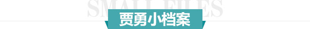
皮肤疾病临床生涯
毕业于同济医科大学临床医学系
北京大学第一人民医院、上海复旦大学
附属华山医院、天津长征医院进修学习
沈阳东城皮肤病医院特约会诊专家
曾在《中华皮肤科杂志》发表论文十余篇
-
同事眼中的贾勇
Co-workers as Jia Yong
/
平易近人、帅气净朗，风趣健谈、细腻亲切，但却又是连纱布怎么剪怎么贴都不能出错、要求苛刻的医生。
-
患者眼中的贾勇
Patients with Jia Yong
/
术前贾院长怕我紧张给我减压，手术时还不时讲段笑话，唠唠家常让人感觉很轻松就做完了。术后细致讲解注意事项，很贴心。
- 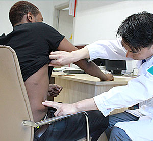
-
个人简介
Personal profile
/
从事皮肤病工作近20年，有深厚的理论基础，形成独具特色的诊疗方法。大胆创新另辟思路，成就了其“皮肤病终结者”的美誉。
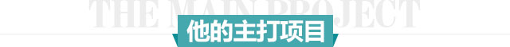
-
牛皮癣
-
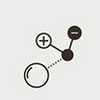
扁平疣
-
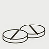
荨麻疹
-
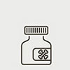
疱疹
-
灰指甲
-
过敏
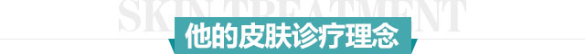
-
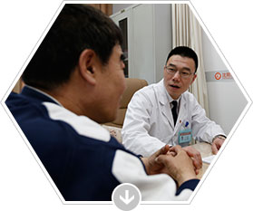
术前亲诊患者
面对面交流病情，制定
手术方案！ -
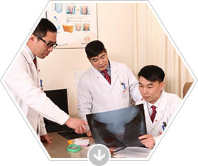
查看患者病情
检查患者身体情况，
排除手术隐患！
-
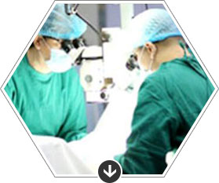
180MIN手术
宁可多花十分钟，确保效果
-
100%效果
保证每一台手术的质量与效果
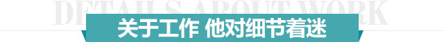
-
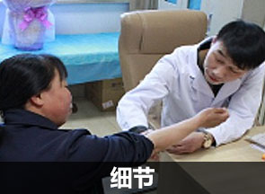
他认为，细节之精才能体现出一个医师的至高水平！
-
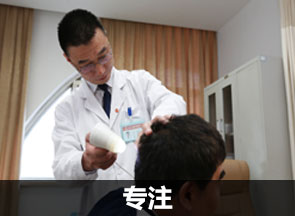
治疗时，即便有很多的旁观者，他总能做到心无旁骛，物我两忘！
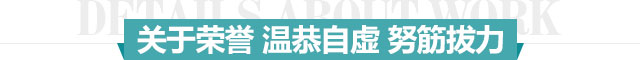
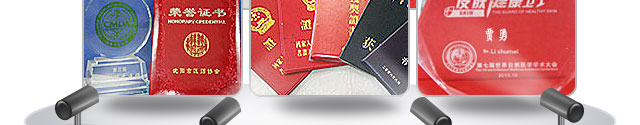
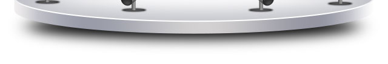
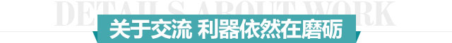
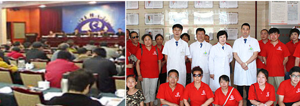
免费自助挂号
(我院郑重承诺，患者填写一下信息绝对保密。)